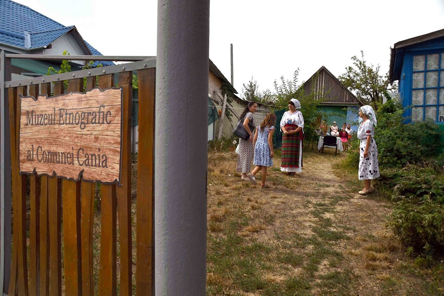
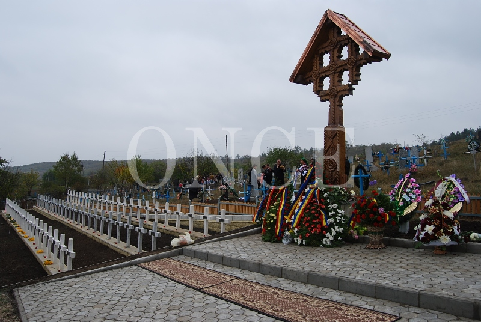
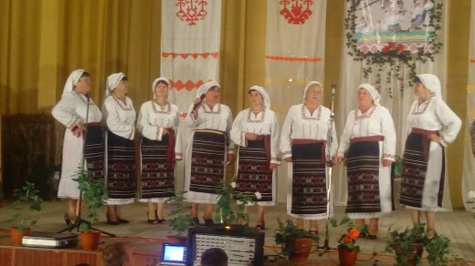
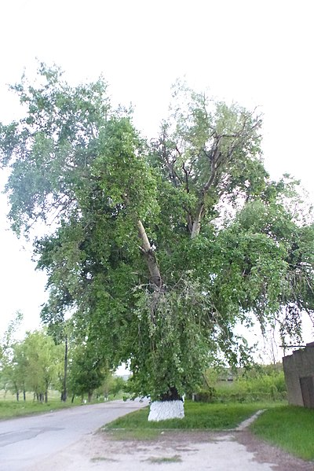
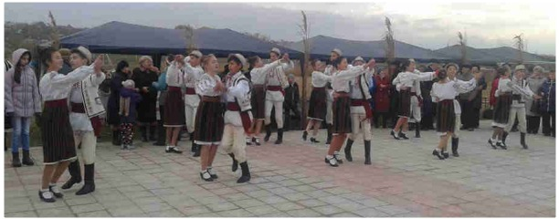

Locuri, oameni și tradiții în Cania
Muzeul etnografic din Cania

Motto: «Muzeul nu este un lux, ci o necesitate». (Nicolae Iorga)
Muzeul de etnografie din satul Cania a fost fondat
la 15 martie 2018.
Colaboratori ai muzeului: Andronova Raisa, Cabac Maria.
Obiectele vechi au fost colectate de la localnici, unele fiind cu o vârstă de peste 100 de ani. Aici
sunt obiecte de artizanat, covoare ustensile de gospodărie, război de țesut ș.a.
La moment muzeul este închis, edificiul fiind avariat, însă la finisarea reparației casei de cultură
din localitate, toate exponatele vor fi expuse într-o sală special amenajată.
Parcela eroilor
Cei 916 militari înhumați la Cania, dintre care doar 117 identificați, luptaseră în regimentele 1/2 și 6 Vânători gardă (din Divizia 1 gardă), 11 și 12 dorobanți (Divizia 21 infanterie) și 30 Artilerie. După război, pe fondul atitudinii ostile a regimului sovietic, față de tot ceea ce reprezenta însemn comemorativ românesc, cimitirul s-a deteriorat treptat. După anul 1991, în contextul obținerii independenței de stat a Republicii Moldova, localnicii au acționat constant în vederea reabilitării memoriei ostașilor români morți în aceste locuri. Datorită acestui deschideri a fost posibilă ridicarea în cimitir a unei troițe de lemn (donație a cetățeanului american, de origine română, Grigore Caraza), care a fost sfințită în data de 5 iunie 2008. Reconstrucția propriu-zisă a cimitirului s-a realizat în anul 2009, lucrările fiind finanțate de Oficiul Național pentru Cultul Eroilor, care a colaborat cu Parohia Bisericii Ortodoxe Române cu hramul „Toți Sfinții Români” din satul Cania (un cuvânt de laudă cuvenindu-i-se, în acest context, preotului paroh Vasile Burduja), firma constructoare fiind FPC „REVETAN“ SRL din Chișinău. Inaugurarea Cimitirului eroilor români din comuna Cania a avut loc în data de 24 octombrie 2009, la ceremonia oficială asistând înalte oficialități din România și Republica Moldova, precum și un număr impresionant din rândul populației locale, o mulțime animată de sentimente de pioșenie față de soarta tragică a eroilor români și un prinos de recunoștință față de jertfa lor. Dumnezeu să-i odihnească!
Ansamblul „Canianca”
Comuna Cania se impune şi prin activitatea artistică de amatori. Este cunoscut ansamblul etnofolcloric „Canianca” distins în repetate rânduri cu premii şi diplome de onoare. Ansamblul activează de mai bine de 25 de ani, având ca conducător artistic pe Bejenaru Drăgălina. Componența colectivului este mereu completată, însă sunt doamne care participă în ansablu de la începuturi. Orice sărbătoare din localitate nu se petrece fără interpretele din Canianca. De asemenea mai multe festivaluri raionale, invită cu plăcere ansamlul să evoluieze ca oaspeți de onoare.
Plopul străvechi
Arborii seculari sunt exemplare solitare sau grupuri mici izolate de arbori, impresionanți prin vârstă, dimensiuni, frumusețe, raritate sau prin faptul că au fost martorii unor evenimente istorice. Plop alb, monument al naturii amplasat în raionul Cantemir, satul Cania, str. Gagarin. Plopoul secular este amplasat în centrul satului și atrage atenția multor trecători sau oaspeți ai localității prin măreția sa. Grosimea copacului este într-atât că este nevoie de vreo trei oameni ca să-l cuprindă.
Hramul satului
Dacă vreţi să audiaţi neaosul grai moldovenesc în cadrul tradiţiilor şi obiceiurilor populare străbune – veniţi la Cania, la hramul satului de Sf. Mare mucenic Demitrie, pe 8 noiembrie. De hramul satului au loc diverse activități artistice, sportive, expoziții ș.a.